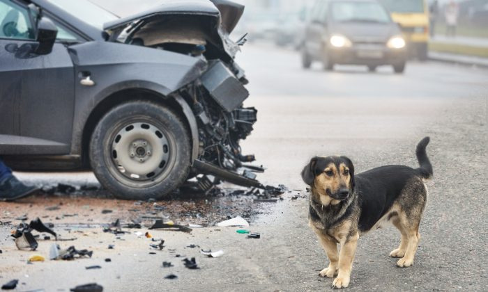

Hello I am Nancy. Today I am trying to raise a social issue which is about the rescue of street dogs. I am here for spreading awareness among people or get my voice heard
SAVING STRAY DOGS
Most People, pet parents or not, empatheise with the stray on the road. It is heart breaking to see an animal abandoned, in pain/sick, without anyone to help. Most people would possibly like to..... but don't know how to go about it. It is not always possible to get a home for a stay but there are a number of ways in which we can ease their pain.
ACCIDENT CASES

We should save them the first animal accident cases are the most disheartening to witness.you should immediately take the animal to the closest veterinarian or get in touch an animal NGO.animal activist "Divya puri says"-NGO and vets don't always have access to ambulances. You might need to take the dog to the vet or hospital yourself.once the dogs gets medical aid and recovers, it is advisable to leave the dogs in the same area he/she picked from.
LOST DOGS

Most people decide to get lost dogs home without putting enough effort into finding there honou.the same thing happens in cases of stray puppies.people get them home without searching for parents of the puppy."Abhinav srijan says"-fauna police...Also ,in most of these cases people keep these dogs at home for some times and then give them to shelter.In Indian shelters,only 5% to 10% dogs survive.So,shelter should be the last resort.Most shelter are over populated and the chances of a healthy dog catching infections is very high too.
The wisest discussion is to look for the honour,and If not found ,to look for a family that can commit to taking care of the dog forever